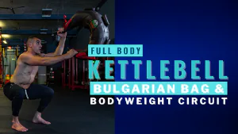

B787 · Full Body Circuit: Kettlebells, Bulgarian Bag, and Bodyweight...Let's GO!
Hello {first_name},
Making progress in training is always easier when you have a few quality circuits/routines in your back pocket.
Today’s circuit hits the upper body, lower body, back, and abs using three exercises
Tip: If you don’t have a Bulgarian Bag, substitute a kettlebell for exercise number 2 in this circuit.
 I recommend anywhere between 2 to 8 sets of this circuit, depending on your time, the weight you use, and how you’re feeling.
Watch the full video for a demo and my recommendations on reps.
Train Intentionally, Mike Salemi
P.S. Get certified with the Bulgarian Bag! I’ve got an online Bulgarian Bag certification + exclusive workshop coming up on August 27th which is the best way to get trained on the foundations.
The Bulgarian Bag was invented to train wrestlers. It is a unique tool for building the kind of strength and conditioning that makes you stronger than you look. Functional training, to me, means that you can apply strength, balance, precision, timing, coordination, etc. in as many positions as possible…not only up and down like a squat or press.
I’ve been using this tool for about 12 years and I can’t recommend it enough. It’s happening on Saturday August 27th. Click here to apply for the certification today. |